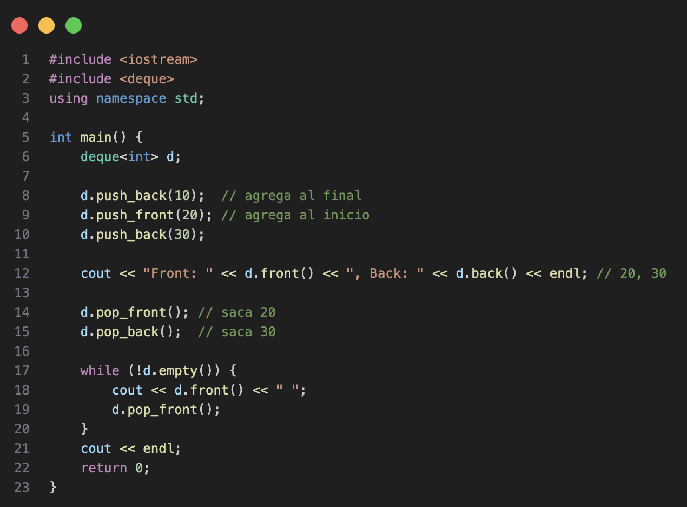
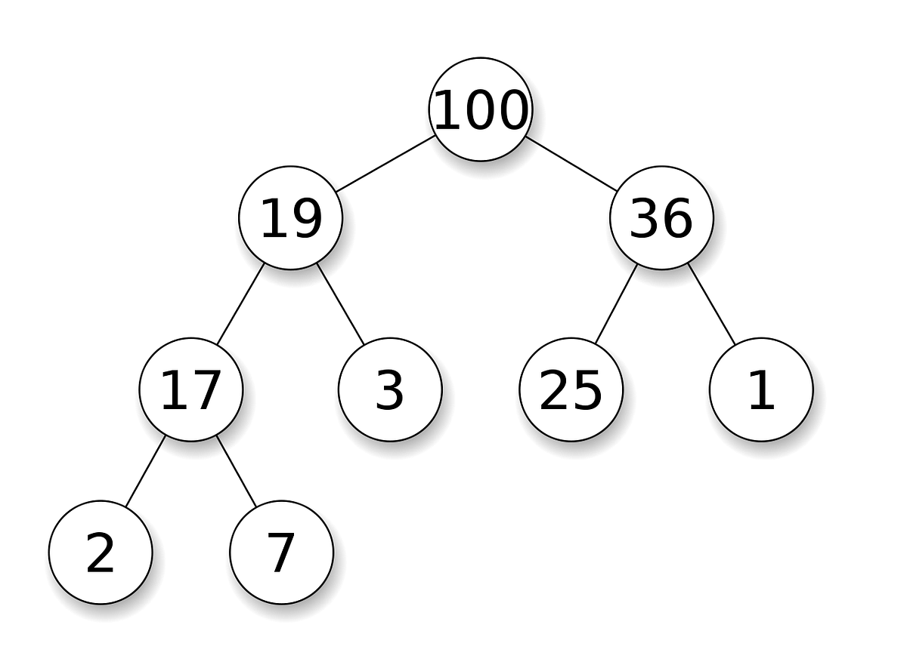
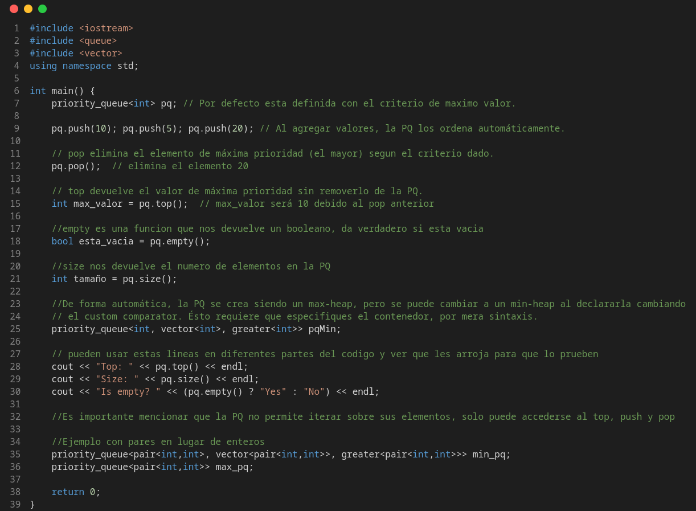
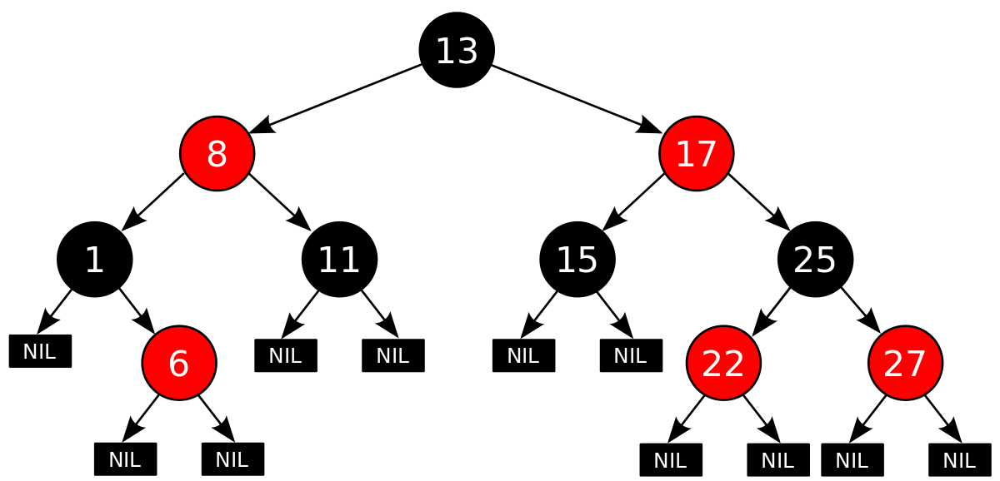
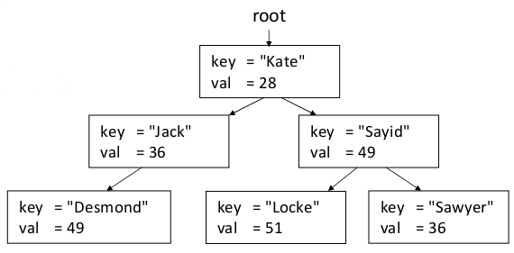

Data Structures & STL
Previous lesson: Algorithmic Complexity
Following lesson: Sorting
Contents
- The usage of DS in contests
- General C++ things
- Vector
- Stack
- Queue
- Deque
- Heap (Priority Queue)
- Binary Search Tree (Map & Set)
- Bitset
- Iterators
- Pair
- Tuple
- Array
- Problems to practice
The usage of DS in contests
A data structure is a way to store and organize data in the memory of a computer. It is important to choose an appropriate data structure for a problem, because each data structure has its own advantages and disadvantages. The crucial question is: which operations are efficient in the chosen data structure?
So when designing an algorithm it is important to pick one that allows for efficient insertions, searches/queries, deletions, and/or updates, depending on what your algorithm needs, because there can be many ways to organize the same data and sometimes one way is better than the other in some contexts.
Although a data structures does not in itself solve a (programming contest) problem (the algorithm operating in it does), using an appropriately efficient data structure for a problem may be the difference between passing or exceedint the problem's time limit.
This page introduces the most important and common data structures used during contest.
From its definition, so the student can fully understand what is he using and how it works, to its implementation in C++ STL (Standard Template Library). As well as some important tips on how to use them based on experience solving problems, and examples of how to write code with them.
Later or sooner, the competitive programmer will have the need for undestanding and get used to use them with ease so will develop speed and comfortness while implementing solutions.
Antoher reason to learn data structures (DS until now) is for opening the door to study more complicated and abstract data structures that there aren't implemented on STL.
General C++ things
All DS showed here are well-implemented in a high-level interface through C++ Standard Template Library (STL).
If the programmer wants to, he can practice importing every needed library individually. This could be a great idea when it's a beginner, so he can fully understand what's he doing and because of what.
However, for the persons who are used to the competitive environment, it could be more convenient to import the full STL with the non-standard import: #include <bits/stdc++.h>.
A good thing to have in mind while studying C++ is knowing where it documentation is, cplusplus.com is one site with very trustable information about the language and its structures. And it is an online compiler that also can be helpful in cpp.sh.
A sentence that almost always follows our imports is using namespace std; sentence.
As it is known, using this sentence allow us to avoid writing std:: before every standard library object or function we want to use. So instead of writing things like std::cin, std::cout, std::endl, or std::vector<T>.
We can just use cin, cout, endl, or vector<T>. Very comfortable.
But why does this happen?
As we know, C++ is a multi-paradigm programming language, and one of its paradigms is Object-Oriented Programming (OOP). This means that everything in C++ is an object, and every object belongs to a class. And every class belongs to a namespace.
A namespace is a declarative region that provides a scope to the identifiers (the names of types, functions, variables, etc) inside it. Namespaces are used to organize code into logical groups and to prevent name collisions that can occur especially when your code base includes multiple libraries.
This way we can have two functions with the same name in different namespaces, and the compiler will know which one we are referring to. We can define our own vector structure or our own cin function, and the compiler will know which one we are referring to thanks to the namespace.
To do this, we can call :: as the scope resolution operator.
Without noting DS libraries, a few headers used very often are #include <algorithm>, and #include <cmath>.
The first one defines a collection of functions especially designed to be used on ranges of elements. Know range as any sequence of objects that can be accessed through iterators or pointers, such as an array or an instance of some of the STL containers.
These algorithms operate through iterators directly on the values, not affecting in any way the structure of any possible container. It never affects the size or storage allocation of the container.
Some of the most used algorithms in contest that #include <algorithm> contains are:
find(), count(), find(), search(), swap(), copy(), fill(), reverse(), sort(), binary_search(), lower_bound(), upper_bound(), min(), max(), min_element(), max_element(), minmax(), minmax_element(), lexicographical_compare(), and many others.
On the other hand, the header #include <cmath> contains a set of functions to compute common mathematical operations and transformations, it is the same as math.h C numerics library.
Vector
There are a few collections in C++ that allow the programmer to work with simple linear collections of data: vector, list, forward_list and array. Even so, vector is the preferred one by competitive programmers.
std::vector is known as a dynamic array, this means that, exactly as an array, internally it is a contiguous block of memory.
To use vector in C++ add the following import: #include <vector> or bits library.
This allow us to access middle elements in constant time. That's basically why it is preferred. A good example of this is with pointer arithmetics, we can declare a pointer p pointing to the first memory location of an vector v and access to the i-th element of the vector with *(p + i) in constant time.
vector<int> v = {1,2,3}; int* p = &v[0];
So you can modify the vector through the pointer like: p[1] = 42; will be the same as doing: v[1] = 42.
And so you can modify k indexed position like: *(p + k), that would be the same as v[k].
Also it is called dynamic because it can change its size in execution time. When it needs more space, it allocates a new block of memory, copies the old elements to the new block and frees the old one. One thing to have in mind about this, is that, if you know the maximum size of your vector, you can reserve it since its declaration giving an argument to the constructor, like this: vector<int> v(1000); this will reserve space for 1000 elements, so it won't have to allocate more space in the future. Doing that you'll save time than if you do push_back() with every element you want.
As an extra tip, you can also give a second argument to the constructor to initialize all the elements of the vector with a specific value. For example, vector<int> v(1000, 0); will create a vector of size 1000 with all elements initialized to 0. This can be pretty useful during contests when you need to initialize a vector with a specific value in order to work with it later.
One thing to keep in mind is that the vector will not allocate more space than it needs, so if you want to add an element to the end of the vector, it will take amortized constant time, but if you want to add an element in the middle of the vector, it will take linear time because it has to move all the elements after that position. We have to ve careful with this, because if we are adding elements in the middle of the vector, it can take a lot of time, this is directly related to insert() and erase() functions.
One kind of problems requires to work with bidimensional arrays, grids or matrices. So we can use a vector of vectors declaring it like: vector<vector<int>> v(n, vector<int>(m,0)); where n is the number of rows and m is the number of columns. This will create a vector of size n with each element being a vector of size m initialized in 0.
The view of this vector of vector, but of pairs should be something like this:

And so a general overview of the vector usage can be seen in the following code, it could be useful to understand how valid sintaxis is used in C++:

Stack
The stack is one of the most well-known and used linear data structures.
It is a Last In First Out (LIFO) structure (or First In Last Out FILO).
Which means that the last element added to the stack will be the first one to be removed. Also, this means that the first element added to the stack will be the last one to be removed.
This can be confusing when hearing it just like that, but it is easier to understand if we think about it as a stack of something in real life.
For example, lets think about a stack of pancakes, when you have a pancake ready, you put it on the stack. With no choice, on the top of the stack. So, when you want to eat a pancake, you take the one on the top of the stack, which is the last one you put there. You cannot take the one on the bottom of the stack, because you have to take all the pancakes on top of it first. It would be a mess!

The stack implementation in C++ is done with std::stack class. And some of its general usage can be seen in the following code:
To use stack in C++ add the following import: #include <stack> or bits library, as the image bellow shows.

Queue
The queue is the second most well-known and used linear data structure.
It is a First In First Out (FIFO) structure (or Last In Last Out LILO).
This means that the first element added to the queue will be the first one to be removed. Also, this means that the last element added to the queue will be the last one to be removed.
For understanding purposes, we can think about it as a queue of people waiting for something, for example, at the supermarket. The first person to arrive at the queue will be the first one to be served, and the last person to arrive will be the last one to be served.

The queue implementation in C++ is done with std::queue class. And some of its general usage can be seen in the following code:
To use queue in C++ add the following import: #include <queue> or bits library, as can be seen in bellow image.

Deque
Deque is one of the most flexible linear data structures.
Deque stands for Double Ended Queue. Let's remember that a queue allow operations of insertion by one side, while removal from the other side.
And we can see the standard queue as a simple ended queue in some way.
So it's not that hard to stablish that a double ended queue allow both operations in both sides of the DS.
In a regular deque you can do operations: push_back, pop_back to interact with the ending, and push_front, pop_front to interact with the beginning of the DS.
C++ implementation of deque also allows to do random access to middle elements on the DS. It must be seen as a vector, but with efficient insertion and deletion at the beginning of the sequence, and not only at its end.
Even tho, internally deque works quite different than vectors.
Deque elements can be scattered in different chunks of storage, with the container keeping the necessary information internally to provide direct access to any of its elements in constant time and with a uniform sequential interface through iterators.
To use deque in C++ add the following import: #include <deque> or bits library.

Heap (Priority Queue)
Heap is a non-linear data structure. Specifically, it is a particular case of a binary tree structure.
As we'll see in posterior sections, trees are also a subset of graphs.
Let's define a graph in its general form as a mathematical structure of nodes and edges.
The, let's define a tree as a particular case of a graph, that accomplish the following characteristics:
- It is an undirected graph.
- It is connected. (It always exist a path between every two vertices)
- It is acyclic.
To build a heap we also need to have in mind a tree with the following conditions:
- It is a rooted tree. One vertex is chosen as the root, which give us a sense of direction and hierarchy. So we can have a sense of parent/children relationships.
- It is a binary tree. This means, every node has at most two childrens.
Finally, we can define the heap as a binary tree who accomplish the following:
- It is a complete tree. This means, every level is fully filled, except possibly the last one, and the last level is filled from left to right, leaving no gaps in between.
- For every node \(u\), except the root, it's accomplished that the value of \(u\)'s father is greater than \(u\)'s value.
The second criteria for a binary tree to be considered as a heap is what makes it a max heap. If we want to build a min heap, we just need to change the second criteria to be that the value of \(u\)'s father is lower than \(u\)'s value.
To build a heap the follow steps are necessary:
- Insert the new element on the first available position. (Deeper left-most gap)
- Check if new value is higher than its father's one. If so, swap elements; otherwise, insertion stops.
- If you swap elements, repeat step No. 2 until you reach the root.
Then, to make a deletion from the heap, the following steps are necessary:
- Remove the root element.
- Replace the root with the last element in the heap.
- Check if new root is lower than its children. If so, swap elements with the highest child; otherwise, deletion stops.
- If you swap elements, repeat step No. 3 until you reach a leaf node.

As it can be seen, operations in the heap have a complexity of \(O(log \; n)\).
In the worst case, both insertion and deletion, have to travel all along tree height's, since our data is stored in a binary tree, the most steps can be done per operation are \(log_2(n)\) steps.
In high level, a heap can be used for a priority queue interface.
A priority queue sort its content based on an specific criteria, this usually interest us to be highest element in the collection (we use a max heap), or lowest element in the collection (then we use a min heap).
But every kind of data type can be used in a priority queue, as well as every criteria we have to. If its necessary, we can always define a custom comparator by ourselves and give it to the PQ.
The priority queue implementation in C++ is done with std::priority_queue class. And, as a standard PQ, it supports the basic operations: insertio, deletion and peek top.
To use priority queue in C++ add the following import: #include <queue> or bits library, as can be seen in bellow image.

Binary Search Tree (Map & Set)
We can serve ourselves with the same definition we used for explaining a heap for a binary tree.
A binary search tree (BST) is a particular case of a binary tree, which accomplishes the following:
- It is a rooted tree. One vertex is chosen as the root, which give us a sense of direction and hierarchy. So we can have a sense of parent/children relationships.
- For every node \(u\), all values in its left subtree are lower than \(u\)'s value, and all values in its right subtree are greater than \(u\)'s value.
This makes a very intuitive way to do operations over the tree.
When inserting elements, the process is the following and it start with the root:
- Compare the new value to the actual node.
- If the new value its lower than the actual one, apply first point with its left child.
- If the new value its greater than the actual one, apply first point with its right child.
Repeat it until you reach a leaf, so its child is empty, then place there the new value.
To delete an element from the BST, the process is the following:
- Find the node to be deleted.
- If it has no children, just remove it.
- If it has one child, replace it with its child.
- If it has two children, find the minimum value in its right subtree (or maximum value in its left subtree), replace the node with that value and delete that minimum (or maximum) value from the tree.
As it can be seen, operations in the BST have a complexity of \(O(log \; n)\) in average case.
In the worst case, both insertion and deletion, have to travel all along tree height's, since our data is stored in a binary tree, the most steps can be done per operation are \(log_2(n)\) steps.
But if the tree is unbalanced, it can become a linked list, so the complexity can become linear \(O(n)\).
The way to solve that problem, is to use an self-balancing tree, it uses mechanisms to detect whenever the tree is degenerating and make rotations to balance it and compensate the trouble.
One kind of self-balancing tree are AVL Tree, where it uses the difference between the heights of the left and right subtrees for any node is at most one. Its named that way because of its inventors, Georgy Adelson-Velsky and Evgenii Landis.
But the C++ implementations is with Red-Black Trees, which are a type of self-balancing binary search tree. They ensure that the tree remains balanced by enforcing certain properties on the nodes, such as coloring them red or black and maintaining specific relationships between them.
In general, they follow the next rules:
- Every node is either red or black.
- The root node is always black.
- All leaves (NIL nodes) are black.
- If a red node has children, both of them must be black.
- Every path from a node to its descendant leaves must have the same number of black nodes.
These rules force the tree to stay balanced enough (not perfectly balanced, but guaranteed log height).
Here the operations works as follows, for insertion:
- Insert the new node like in a normal BST.
- Color it red initially.
- If this breaks the rules (e.g. parent is also red), fix it using recoloring (flip red/black colors) or rotations (left of right to rebalance).
Working with deletions:
- Remove node like in a BST.
- If this breaks rules (e.g. black-height inconsistency), fix it with recoloring + rotations.
And finally, looking up on it works exactly like a normal BST (go left/right depending on value). Since the balancing only affects performance, not lookup logic.

The first of the interfaces over Red-Black Tree is the Set DS, and these are the most important things to know about it is that it only contains unique elements, automatically sorted.
There also exists multiset structure, which is exactly the same as set, but it also admit duplicated elements.
To use set and multiset you only need the import #include <set>.
The second DS that uses Red-Black Tree implementation is Map DS.
Maps are associative containers that store elements formed by a combination of pairs key value and a mapped value, following a specific order.
Internally, the elements in a map are always sorted by its key, it works so well just as a set, since there can't be repeated keys, just by concept, you must be looking up for the same key-value pair.
The types of key and mapped value may differ, since they're grouped together by a usual pair.
It is important to make the comparison with hashtable structure, since it is also an associative container. Map could be slower than Unordered Map, just by the nature of how are thay implemented. Also, Map allow us to make fixed-range look up, as could be upper_bound or lower_bound.
There also exists multimap structure, which is exactly the same as map, but it also admit duplicated keys. There can be multiple nodes with the same key each, but with different values. So you can do things like mm.insert({1,"one"}); mm.insert({1,"first"});.
To use both map and multimap structures, the import #include <map> is needed.

Bitset
A bitset stores bits.
Emulates an array of bool elements, but optimized for space allocation: generally, each element occupies only one bit.
Each bit position can be accesed individually with the operator [], and just like a vector, 0-indexed.
Bitsets have the feature of being able to be constructed from and converted to both, integer values and binary strings. They can also be directly inserted and extracted from streams in binary format.
A bad thing about bitsets is that is needed to declare its size in compilation time and it is not mutable, let's say that we're declaring a bitset of size 16.
Bitset have three constructor method, if instanced as bitset<16> bs(); it is initialized on zeros. It can also be initialized from an integer value bitset<16> bs(42);. And the third method is to do it over a binary string: bitset<16> bs("101010");.
There also can be applied any bitwise operator over the bitset identifier.
The rest of the interested methods follows:
- to_string() - Returns a string representation of the bitset in binary format.
- to_ullong() - Converts the bitset to an unsigned long long integer. If its used, do it carefully, becuase it will return the number to an unsigned, if you assign it to a signed, the number representation could not be as expected.
- size() - Size declared initially for the bitset.
- count() - Return the number of 1's in the bitset.
- test(size_t pos) - Returns a boolean, depending on the bit at position pos. (0 = false, 1 = true)
- any() - Returns a boolean, true if there's at least one bit 1 on the bitset, false otherwise.
- none() - Returns a boolean, true if there's no bit 1 on the bitset, false otherwise.
- all() - Returns a boolean, true if all bits are 1 on the bitset, false otherwise.
- set() - Sets to 1 all bits on bitset.
- set(size_t pos, bool val) - Sets val as the value for the bit at position pos.
- reset() - Resets to 0 all bits on bitset.
- reset(size_t pos) - Reset to 0 bit at position pos.
- flip() - Flips all bits on bitset.
- flip(size_t pos) - Flips bit at position pos.
Iterators
A good way to understand iteratos it to think on them as pointer wrappers.
An iterator is an object that behaves like a pointer, used mostly to travel containers in C++. Instead of exposing raw memory, it provides a uniform interface to access elements inside any container.
A little about the magic of iterators is that they work inside any container, otherwise you should work with different code for each container type. More specifically, each data container have its own iterator.
For example, to declare an iterator we use the following sintaxis: vector<int>::iterator so you have an iterator useful for vector. As you have read in General C++ things section, that means you control which iterator you want to use by calling its namespace.
There are many types of iterators, even tho we only need to use iterator, the rest of them are low-level cpp implementations that we don't need to know.
What is relevant for us is to knwo the two most important iterators: begin() and end(). The easiest way to understand them is with a vector container, where indexes are well defined.
begin() always points to the first element (or index) in the collection. While end() to one position after the last element in the collections. It can be obtained by doing v.begin() + v.size(), so it isn't a valid position for an element to exist.
end() acts a lot like sentinel, in non-linear containers this definitions loses precision, but it accomplishes the same idea. In trees, it is NIL nodes (childrens of leafes), for example.
The partners of both begin() and end() are rbegin() and rend() iteratos, which preffixed r letter stands for reverse. This means, that rbegin() points to the last element in the collection, and rbegin() points to one position before the first element in the collection.
A consecuence of this is that you can access to the last element in a collection by checking *s.rbegin(), *prev(s.end()) or *(s.end() - 1).
A lot of methods in algorithm header use iterators, since they're a lot about range operations.
Iterators are important because of it common use in functions, but also to travel map and set container, as well as unordered_map and unordered_set.
Since they're containers are not trivial, in BST iterators need to implement a next-node searching algorithm, and they need a reference about where's the next bucket in HT DS.
So, in general, when you have to traverse a map, you have to do it with iterators, or with for-each sentence.
Since they're, essentially, pointers, pointer arithmetic also works with them. This idea only remains to array-based containers, such as vector or deque, since thay have random access to its elements. For example, to access to the ith element of the collections, you can access by *(v.begin() + k).
You can know how many elements are in the collection by v.end() - v.begin() which is the same as consulting size(), and you can know the position of a iterator-known object by doing v.begin() - it.
Pair
This class couples together a pair of values, which may be of different types. The individual values can be accessed through its public members first and second.
Pairs are a particular case of a tuple, which is a generalization of a pair to an arbitrary number of elements.
You can declare a pair like: pair<int, string> p; or pair<int, string> p = {1, "hello"}; or auto p = make_pair(1, "hello");.
You can access to its elements with p.first and p.second members.
And also you can use pairs inside of others data structures, such as vectors or maps. For example, a vector of pairs can be declared like: vector<pair<int, string>> v; and you can make pairs by putting both values you want to make a pair with inside a pair of keys, so you can work with it like: v.push_back({1,"one"});.
To use pair in C++ add the following import: #include <utility> or bits library.
Tuple
A tuple is an object capable to hold a collection of elements. Each element can be of a different type.
You can declare a tuple like: tuple<int, string, double> t(1,"hello",3.14); or auto t = make_tuple(1, "hello", 3.14);.
You can access to its elements with get<0>(t), get<1>(t) and get<2>(t) functions.
As like pairs, you can use tuples inside of others data structures, such as vectors or maps. For example, a vector of tuples can be declared like: vector<tuple<int, string, double>> v; and you can make tuples by putting all the values you want to make a tuple with inside a pair of keys, so you can work with it like: v.push_back(make_tuple(1,"one",2.0)); or v.push_back({1,"one",2.0});.
We have used tuples with only three values, but you can use as many values as you want, just by adding more types to the tuple declaration.
To use tuple in C++ add the following import: #include <tuple> or bits library.
Array
Arrays are fixed-size sequence containers: they hold a specific number of elements ordered in a strict linear sequence.
Internally, an array does not keep any data other than the elements it contains. It is as efficient in terms of storage size as an ordinary array declared with the languague's bracket sintax ([]).
Essentially, an array is a wrapper around a C-style array, which allows the use of STL algorithms and iterators. If you need to use a structure with various members of the same type, an array is a good choice even over a tuple, since it is more efficient in terms of memory usage and it is simplier to access to its elements.
You can declare an array like: array<int, 5> a = {1,2,3,4,5}; or array<int, 5> a; and then assign values to its elements like: a[0] = 1;.
You can access to its elements with a[0], a[1], a[2], etc.
To use array in C++ add the following import: #include <array> or bits library.
Problems to practice!

Codeforces 5C - Longest Regular Bracket Sequence

Leetcode 20 - Valid Parentheses
Leetcode 2390 - Removing Stars From a String
Leetcode 738 - Daily Temperatures
Codeforces 1526C - Potions (Hard Version)
Codeforces 2037D - Sharky Surfing
AtCoder ABC399 C - Snake Queue
CSES 1621 - Distinct Numbers